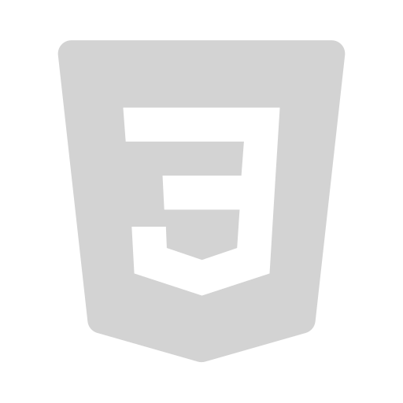

Habilidades
Lenguajes de programación

Java
HTML 
CSS

JavaScript
Frameworks
Node.Js
Spring Boot

Angular
¡Hola! Soy Nicolás, Ingeniero de Software enfocado en el desarrollo frontend con Angular y en el backend con Node.js y Spring Boot. Estoy comprometido con la creación de soluciones eficientes y de calidad. ¡Emocionado por aprender más y poder contribuir a diversos proyectos!
Estoy emocionado de que puedas conocer más sobre mí. Si te interesa, puedes explorar mi perfil de LinkedIn, visitar mi GitHub o descargar mi CV. ¡Agradezco tu interés y estoy disponible para cualquier consulta!